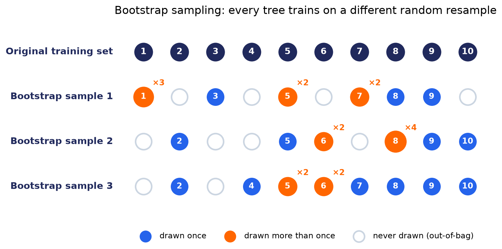
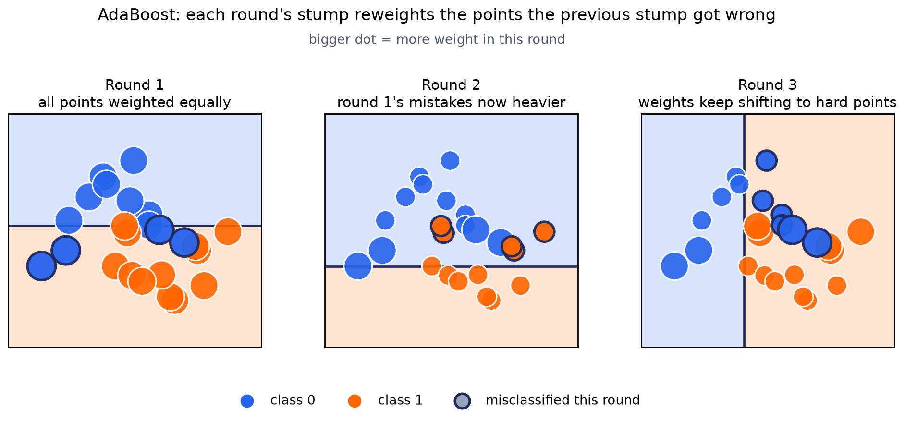
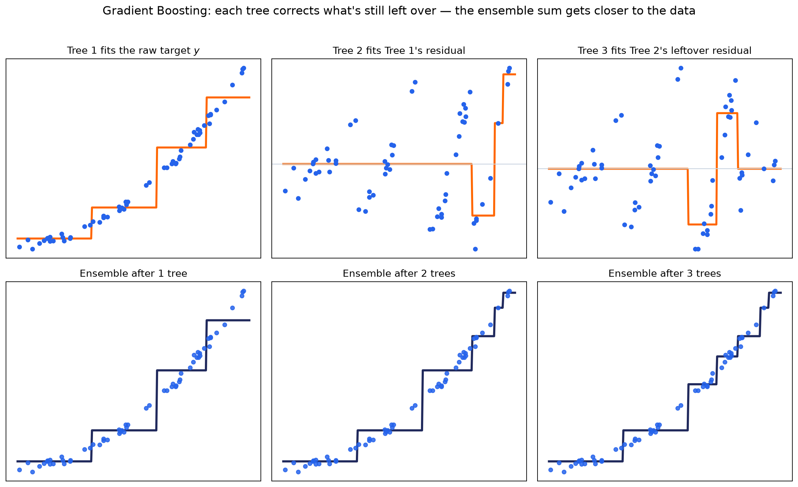
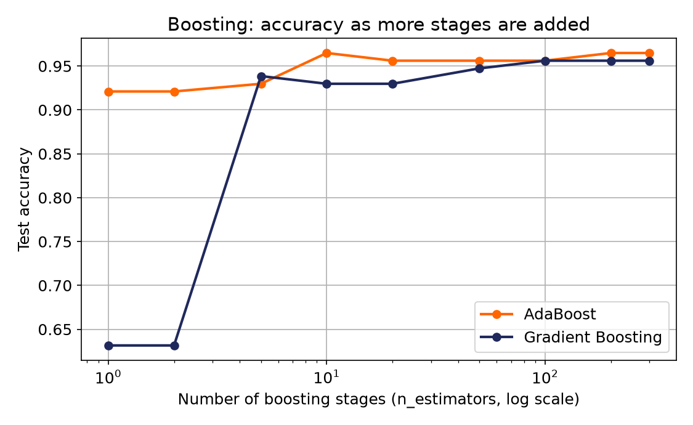
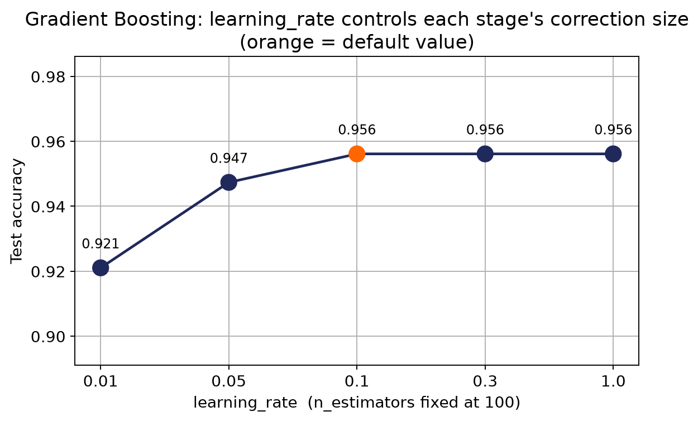
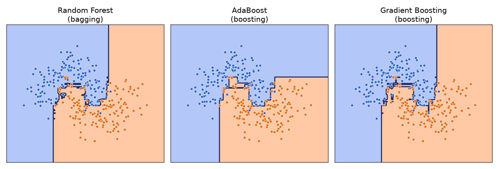

جنگل تصادفی (بخش قبل)، فقط یک نمونه از یک ایدهی بزرگتر است:
چند مدل ضعیف، اگر خطاهایشان مستقل باشد، میتوانند یک مدل قوی بسازند.
پیش از جزئیات
دو خانواده، دو مسیر کاملاً متفاوت
Bagging
bootstrap aggregating · parallel
Training data
↓
Sample 1
Sample 2
Sample 3
↓
Model 1
Model 2
Model 3
↓
Vote / Average
مدلها همزمان و مستقل از هم ساخته میشوند؛ هرکدام روی نمونهای متفاوت. نمونه: جنگل تصادفی.
Boosting
sequential · corrective
Model 1
↓ خطاها
Model 2
↓ خطاهای باقیمانده
Model 3
↓
Combine (weighted)
مدلها یکییکی و پیدرپی ساخته میشوند؛ هر مدل جدید، دقیقاً روی خطاهای مدل(های) قبلی متمرکز میشود.
مسیر اول
Bagging
مدلهای مستقل، موازی، هر کدام روی یک نمونهی تصادفی متفاوت از داده آموزش میبینند، و در پایان رأیگیری میشود.
جنگل تصادفی معروفترین نمونهی Bagging است؛ ایده قابل تعمیم به هر مدل پایهای دیگری هم هست، نه فقط درخت؛
مثلاً میتوان همین ایده را با رگرسیون لجستیک یا KNN بهعنوان مدل پایه هم تکرار کرد.
اسم «Bagging» از همینجا میآید: Bootstrap Aggregating؛
«بوتاسترپ» یعنی نمونهگیری تصادفی با جایگزینی؛ «Aggregating» یعنی جمع کردن (رأیگیری) نتیجهی مدلها. صفحهی بعد، همین نمونهگیری را با عدد واقعی نشان میدهد.
دیدن اثر
نمونهگیری بوتاسترپ، روی ۱۰ نمونهی فرضی

هر نمونهی بوتاسترپ، بهاندازهی دادهی اصلی است اما با تکرار: بعضی نمونهها چند بار انتخاب میشوند، بعضی اصلاً انتخاب نمیشوند
(نقاط توخالی؛ به اینها Out-of-Bag میگویند). همین تفاوتهای تصادفی است که باعث میشود هر مدل، چیز کمی متفاوت یاد بگیرد.
مسیر دوم
Boosting: یادگیری از اشتباهات قبلی
اینبار مدلها پیدرپی ساخته میشوند، نه موازی. مدل اول را میسازیم، ببینیم کجا اشتباه کرد؛
مدل دوم را مخصوص همان اشتباهات میسازیم؛ مدل سوم مخصوص چیزی که هنوز مانده، و به همین ترتیب.
پیشبینی نهایی، ترکیب همهی این مدلهای کوچک و متوالی است.
دو نسخهی معروف
AdaBoost و Gradient Boosting.
Boosting · نسخهی اول
AdaBoost(Adaptive Boosting)
مدل اول (معمولاً یک درخت خیلی کوچک، تنها یک شکاف) روی داده آموزش میبیند. نمونههایی که اشتباه طبقهبندی شدهاند، در دور بعد
وزن بیشتری میگیرند؛ یعنی مدل بعدی مجبور است بیشتر روی همان نمونههای سخت تمرکز کند. این چرخه چند بار تکرار میشود؛
پیشبینی نهایی، رأیگیری وزندار همهی این مدلهای کوچک است؛ مدلی که دقیقتر بوده، رأی بیشتری در تصمیم نهایی دارد.
تنها تنظیمی که معمولاً لازم است، تعداد این دورهاست (n_estimators)؛ مثل جنگل تصادفی و
Gradient Boosting، بیشتر شدنش تا یک سقف کمک میکند و بعد اثرش کم میشود.
دیدن اثر
وزن نمونهها، دور به دور

اندازهی هر نقطه = وزن آن نمونه در آن دور؛ نقاط با حاشیهی مشکی، همانهایی هستند که آن دور اشتباه طبقهبندی شدند.
دور به دور، نقاطِ سخت (نزدیک مرز) بزرگتر میشوند و مدل بعدی را وادار میکنند دقیقاً همانجا تمرکز کند.
Boosting · نسخهی دوم
Gradient Boosting
مکانیزمی متفاوت، با همان روح پیدرپی: بهجای وزندهی مجدد نمونهها، هر مدل جدید مستقیم روی
«باقیماندهی خطای» (residual) مدلهای قبلی آموزش میبیند؛ یعنی یاد میگیرد هنوز چقدر تا پاسخ درست فاصله هست، و همان فاصله را کم میکند.
هایپرپارامتر learning_rate تعیین میکند هر مدل جدید چقدر از این باقیمانده را همین حالا جبران کند:
مقدار کوچکتر یعنی قدمهای کوچکتر و امنتر (نیاز به مراحل بیشتر)، مقدار بزرگتر یعنی قدمهای بزرگتر (سریعتر ولی پرخطرتر). در ادامه، اثر هر دو را با عدد واقعی میبینیم.
دیدن اثر
هر درخت، دنبال چیزی میگردد که درخت قبلی جا انداخته

ردیف بالا: هر درخت (نارنجی) چه چیزی را یاد میگیرد؛ درخت اول خودِ داده را، درخت دوم و سوم فقط باقیماندهی خطای قبلی را.
ردیف پایین: جمع تجمعی این درختها (سرمهای) با هر درخت جدید، به دادهی واقعی نزدیکتر میشود.
دیدن اثر
دقت با افزایش تعداد مراحل Boosting

دقیقاً شبیه اثری که با تعداد درخت در جنگل تصادفی دیدیم: با افزایش مراحل، دقت بالا میرود و بعد تثبیت میشود؛
اما اینبار چون مراحل پیدرپی و مکمل هماند، نه مستقل و موازی.
دیدن اثر
اثر learning_rate روی Gradient Boosting

نرخ خیلی کوچک (0.01) با همین تعداد مرحلهی ثابت هنوز کامل «نرسیده» و دقت پایینتر است.
از یک نقطه به بعد (اینجا حدود 0.1، مقدار پیشفرض) دقت تثبیت میشود؛ نرخهای خیلی بزرگتر معمولاً سود بیشتری نمیدهند و روی دادههای نویزیتر میتوانند بیثبات یا بیشبرازشکرده هم بشوند.
مقایسهی بصری
Bagging در برابر Boosting، روی مرز تصمیم

هر سه، از یک ایدهی مشترک («ترکیب مدلهای ضعیف») به نتیجهی قوی و مشابهی میرسند، هرچند مسیرشان (موازی در برابر پیدرپی) متفاوت است.
فراتر از scikit-learn
کتابخانههای صنعتی Boosting
XGBoost
LightGBM
CatBoost
نسخههای سریعتر و بهینهشدهی Gradient Boosting؛ رایجترین انتخاب صنعتی روی دادهی جدولی، .
همان الگوی fit/predict را دنبال میکنند؛ فقط باید جداگانه نصب شوند.
Bagging: مستقل و موازی، با نمونهگیری بوتاسترپ. Boosting: پیدرپی، هرکدام مکمل خطای قبلی.
AdaBoost با وزندهی مجدد نمونهها یاد میگیرد، Gradient Boosting با تعقیب باقیماندهی خطا؛
دو مکانیزم متفاوت برای همان ایدهی «یادگیری از اشتباه قبلی». قدم بعدی: دو رویکرد کاملاً متفاوت دیگر؛ مرزی با بیشترین فاصلهی امن، و یک رویکرد احتمالاتی سریع.